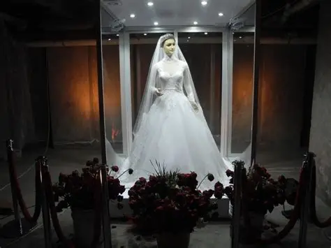

El 25 de marzo de 1930, los habitantes de la ciudad de Chihuahua quedaron paralizados frente al escaparate de la tienda de novias "La Popular". En el centro, lucía un maniquí de una belleza tan inquietante que pronto se convirtió en el tema principal de cada hogar. Sus ojos tenían un brillo casi humano, sus uñas presentaban cutículas reales y, en sus manos, se podían apreciar las finas líneas de las huellas dactilares.
La dueña de la tienda, la señora Pascualita Esparza Perales, afirmaba que era un modelo traído desde Francia. Sin embargo, el parecido del maniquí con su propia hija, fallecida recientemente, era innegable. La joven había muerto trágicamente el día de su boda, víctima de la picadura de una viuda negra que se ocultaba en su tiara.
Con el tiempo, los rumores se transformaron en leyendas. Los empleados de la tienda se negaban a vestirla a solas, asegurando que sus piernas tenían varices reales y que el tejido de su piel se sentía frío y elástico. Algunos valientes juran que, al caminar frente a la vitrina durante la madrugada, el maniquí mueve los ojos siguiendo sus pasos o sonríe levemente a los transeúntes solitarios.
A pesar de que expertos han intentado desmentir el mito alegando que un cuerpo no podría conservarse en esas condiciones sin refrigeración, La Pascualita permanece ahí, inamovible, como la novia eterna de Chihuahua. Una joya del macabro mexicano que sigue esperando a que alguien, algún día, descubra si su corazón de cera aún late bajo el encaje blanco.